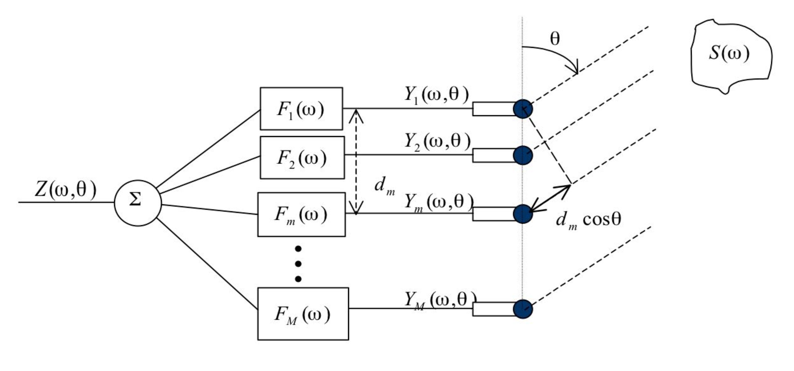

Beamforming#
Beamforming is a signal processing technique that originates from the design of spatial filters into pencil shaped beams to strengthen signals in a specified direction and attenuate signals from other directions. Beamforming is applicable to either radiation or reception of energy. Here, we consider the reception part. A beamformer is a processor used along with an array to provide a versatile form of spatial filtering. It essentially performs spatial filtering to separate signals that have overlapping frequency content but generate from different spatial directions.
Beam forming or spatial filtering is the process by which an array of large number of spatially separated sensors discriminate the signal arriving from a specified direction from a combination of isotropic random noise, called ambient noise, and other directional signals. In the following simulations, we deal with a number of equally spaced elements separated by a distance of λ/2 , where λ is the wavelength of the frequency for which the beam former is designed.
The assumptions under which we perform the simulations are
The noise is anistotropic.
Ambient noise at the sensor-to-sensor output is uncorrelated
The signal at the sensor-to-sensor outputs are fully correlated
For our context, we’re mainly considering Uniform Linear Arrays (ULAs, for short). As the name suggests, it consists of a number of sensors that are placed at a uniform distance from each other. The sensor-spacing in the array is decided based on two important considerations.
First being the coherence of noise between sensors and formation of grating lobes in the visible region. As far as isotropic noise is concerned, the spatial coherence is zero at spacing in multiples of \(\lambda/2\) and small at all points beyond \(\frac{\lambda}{2}\). To avoid grating lobe issues, the spacing between sensors must be less than \(\frac{\lambda}{2}\). Hence, \(\frac{\lambda}{2}\) is chosen as the distance between two elements in an array.
Second assumption is that the source is super-far from the array. This assumption allows us to design the system under the assumption that the wave-fronts that arrive at the aperture are parallel straight-lines. Note that this particular assumption also results in the consequential assumption that the source is at an infinite distance from the sensor. Consequently, our algorithm will only churn out the direction-of-arrival (DOA, for short). Since the wavefront will be parallel and at a delay, the wavefront reaches each element with varying delay. As a result, the output of each element will have a phase delay from each other as shown below.

Using the above figure, we can calculate the corresponding delay of each element. This will help us in determining to what degree we would have to delay the element outputs to obtain all the outputs of elements in co phase. Once the outputs are made in-phase, they are added. For an M element array, the co-phase addition increases the signal power \(N^2\) times and the uncorrelated noise power \(N\) times. Thus the SNR is enhanced by \(N\) times.
By changing the delays of the element’s output, we can steer the setup to give the gain to signals coming from a certain direction. This is called beam steering and is one of the most attractive features of a beamformer because it allows us to shift our attention to one particular direction without physically having to move the ULA. However, as one ‘steers’ a beamformer, the width of the main lobe goes on increasing because the effective length of the array decreases. That’s the trade-off.
In our simulation, we create a matrix with the columns corresponding to the output of each element for a source at a certain angle. The noise is then added. This is the output of the elements in the array. This is the basic setup. The array is then manipulated or used as input for other array manipulations to obtain the solution to the problem/objective posed.
To put things mathematically, let the source signal be \(s(k)\). The output of the elements are delayed versions of \(s(k)\). So, for an element, i, the output signal would be $\( y(k) = s[k - \tau_i(\theta)] \)$
Using the fourier transform, we get the following $\( Y_i(\omega, \theta) = e^{-j \omega \tau_i(\theta)} S[\omega] \)$ where,
\(\tau_i(\theta) = d_m \frac{cos(\theta)}{c} F_s\)
\(d_m\): distance between the element in consideration and the element where the wavefront strikes first.
\(\theta\): the angle the rays make with the array axis.
\(c\): the speech of sound in water
\(F_s\): The sampling frequency of the elements.
Now, we need to construct a steering vector, $\( d(\omega, \theta) = [1, e^{j\omega \tau_2 |theta}, e^{j\omega \tau_3 |theta} ... , e^{j\omega \tau_M |theta}] \)$
To obtain the element output, we multiply this matrix with the signal function, which results in the signal being delayed by the specificed delay. $\( \mathbf{Y}(\omega, \theta) = d(\omega, \theta) S[\omega] \)$
The output signal is thus given by $\( Z(\omega, \theta) = \sum_{i = 1}^M F_{i}^*(\omega) Y_i (\omega, \theta) = F^H(\omega) Y(\omega, \theta) \)$ where
\(F^H\): the matrix containing the complex weights.
The complex radiation field produced by a linear array of \(N\) passive receivers is given by $\( Z(\omega, \theta) = \frac{1}{M} \sum_{m = 1}^{M} s(\omega) e^{- j (m-1) \frac{\omega d}{c} (cos(\theta) - cos(\psi))} \)$
Reference#
“Beamforming.” Wikipedia, The Free Encyclopedia. Wikipedia, The Free Encyclopedia, n.d. Web. 12 Sept. 2024. https://en.wikipedia.org/wiki/Beamforming.